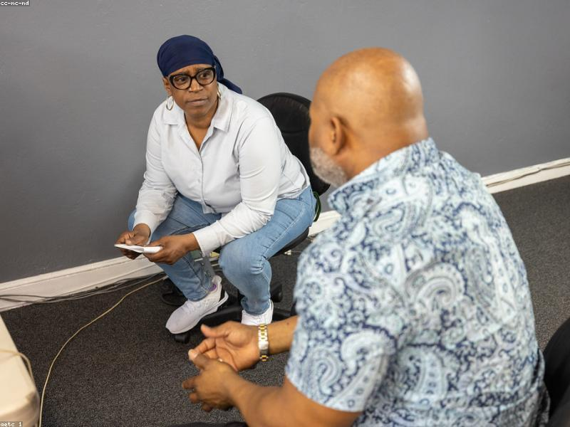

Free Educational Counselling
Honest guidance on courses, costs, cities, and timelines · free for students and parents.
Learn moreFree Educational Counselling
Choosing a country, a city, and a school is a big decision. Our counselling is completely free and honest — for students and parents alike.
- A frank assessment of your academic background, budget, and goals
- Realistic guidance on courses, costs, cities, and timelines
- A clear comparison of Japan versus other destinations
- A step-by-step plan with no pressure and no hidden fees
We tell you what you need to hear, not what you want to hear.